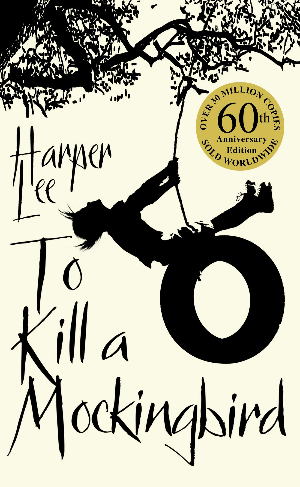

Bildungsroman is a literary genre of stories about a character growing psychologically and morally from their youth into adulthood. Generally, they experience a profound emotional loss, set out on a journey, encounter conflict, and grow into a mature person by the end of the story. Literally translated, a bildungsroman is “a novel of education” or “a novel of formation.” Judy Blume’s MasterClass teaches more about
|  | ||
| To kill a mocking bird by "Harper Lee" | Jane Eyre by "Charolette Bronte" | Great Expectations by "Charles Dickens" |